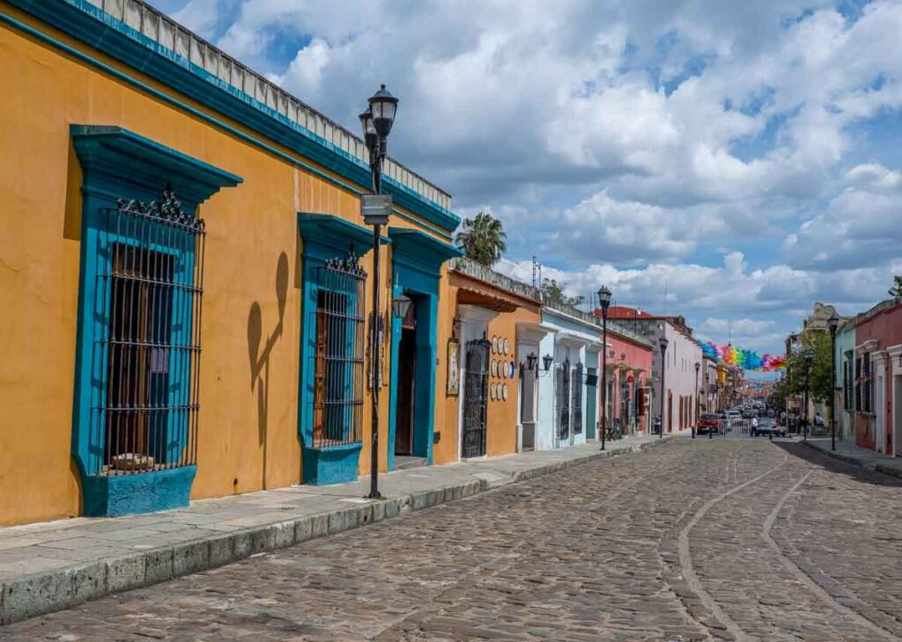
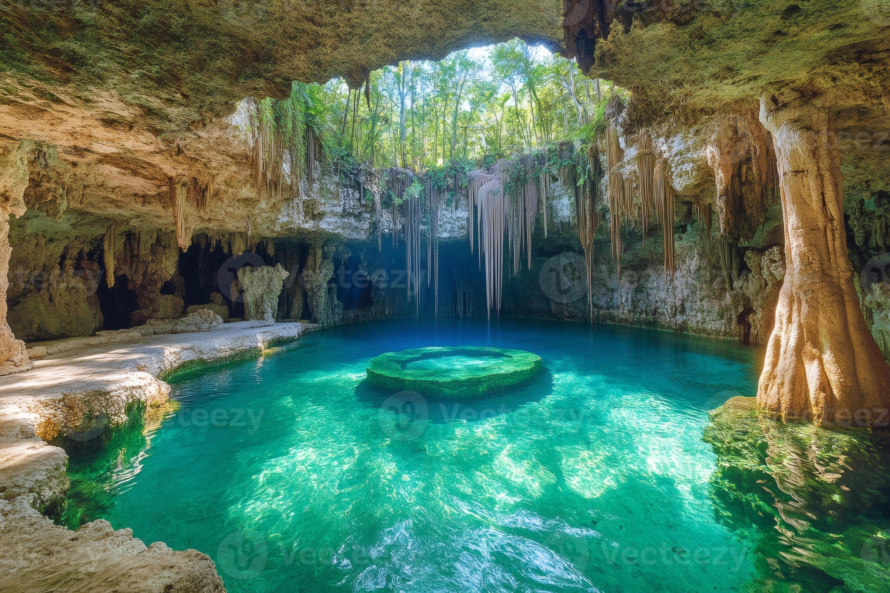
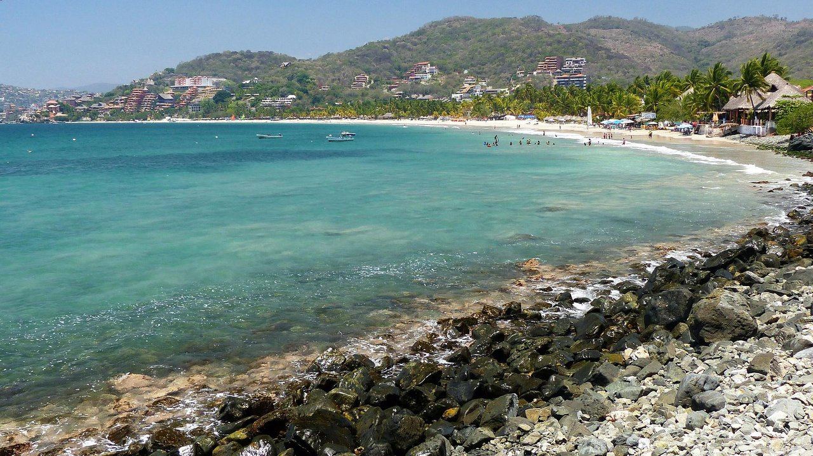
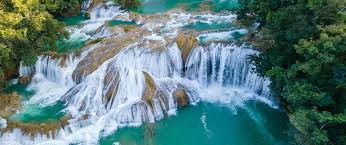
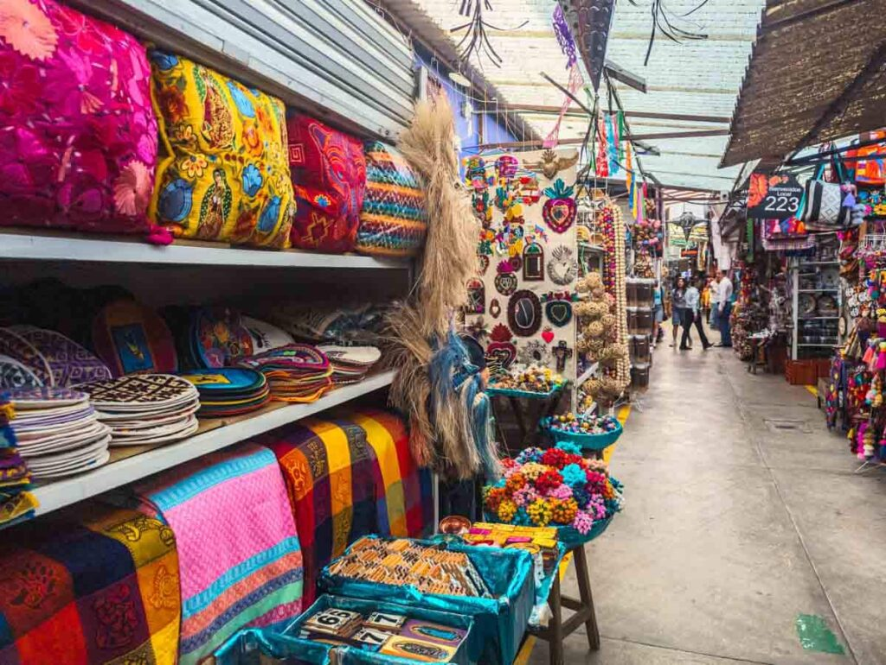
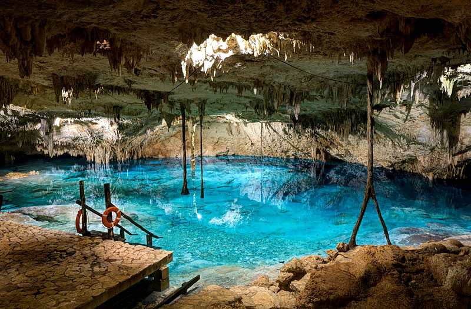
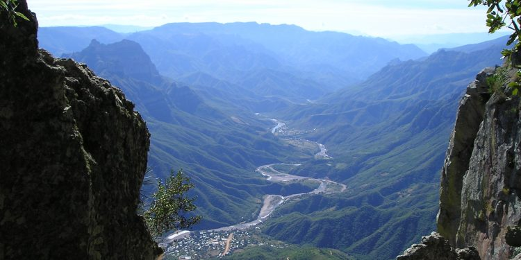
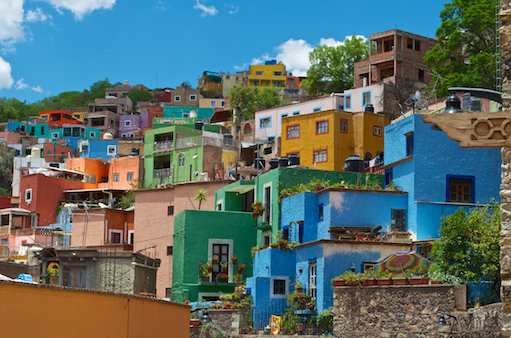
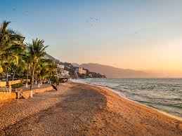
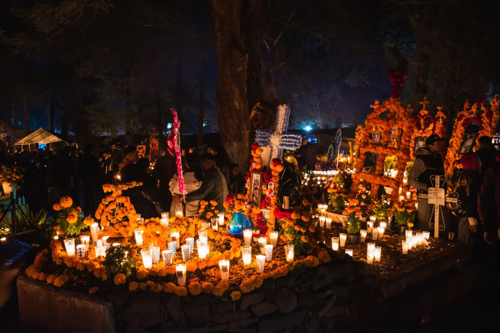

Sur · Oaxaca
Oaxaca
Artesanía, mezcal y Monte Albán — donde la historia precolombina vive en cada calle.
Turismo en México
Playas de cristal, selvas milenarias, ciudades con historia y sabores que se quedan para siempre. México es más que un destino — es una experiencia que transforma.
Explora México

Sur · Oaxaca
Artesanía, mezcal y Monte Albán — donde la historia precolombina vive en cada calle.

Sureste · Yucatán
Cenotes sagrados y la majestuosa Chichén Itzá.
Centro · CDMX
Museos de talla mundial, gastronomía y vida nocturna.

Pacífico · Guerrero
Zihuatanejo y sus bahías de aguas perfectas.

Sureste · Chiapas
Cascadas turquesa, selva lacandona y San Cristóbal de las Casas.
Lo que te espera
Desde el mar hasta las montañas, México tiene todo lo que buscas — y más.
Zonas arqueológicas, museos y fiestas declaradas Patrimonio de la Humanidad.
Buceo en cenotes, surf, kayak y playas de arena blanca a lo largo de dos costas.
Selvas, sierras y barrancas: más del 10% de la biodiversidad del planeta.
Cocina mexicana reconocida por la UNESCO — tacos, mole, mezcal y mucho más.
Tu próximo viaje
Cuéntanos qué buscas y te ayudamos a armar el viaje perfecto.
Geografía
Galería
Una pequeña muestra de los colores que te esperan.






